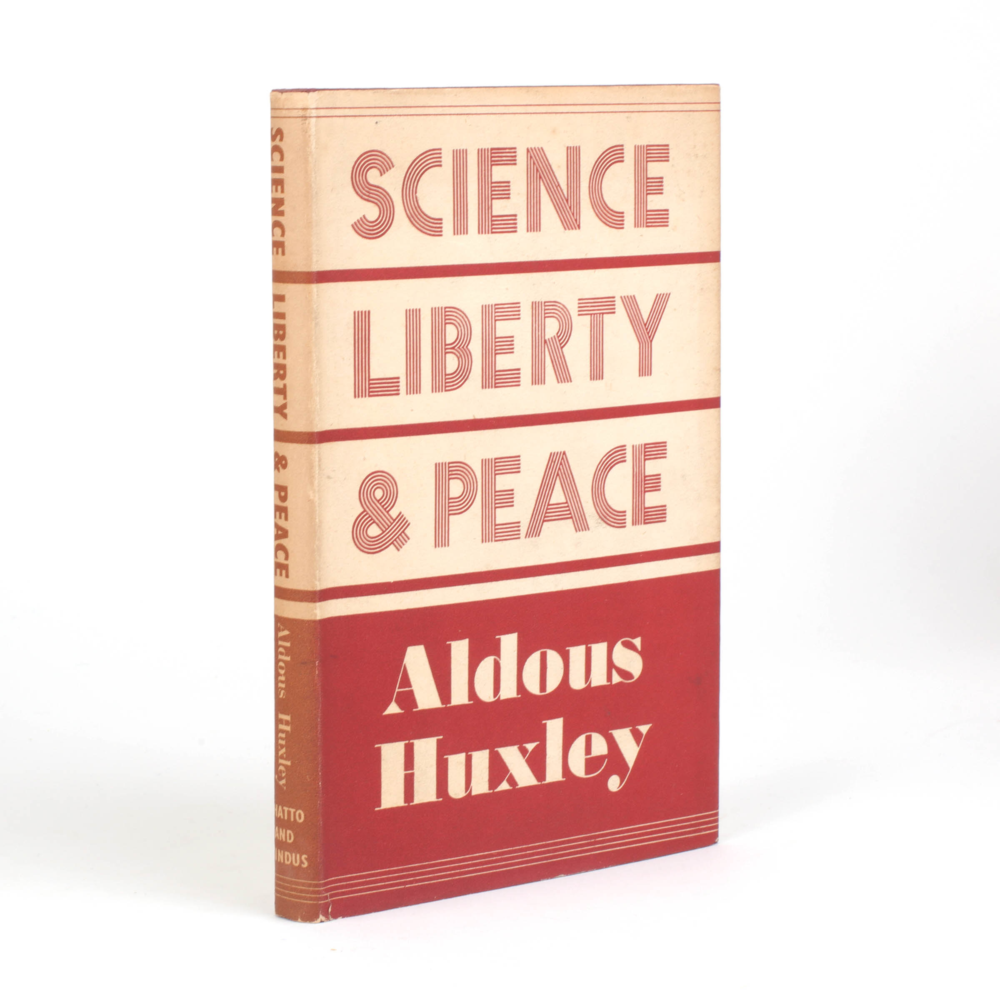
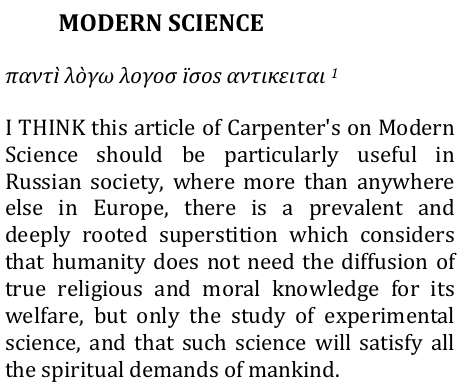
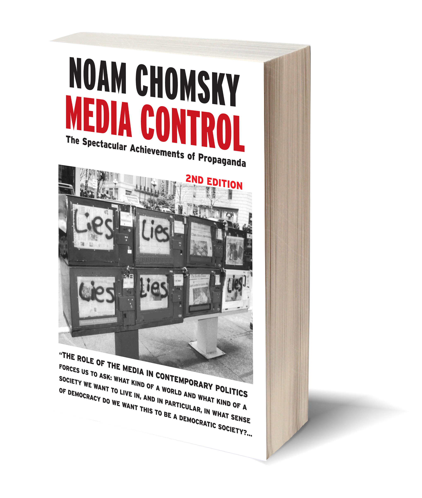
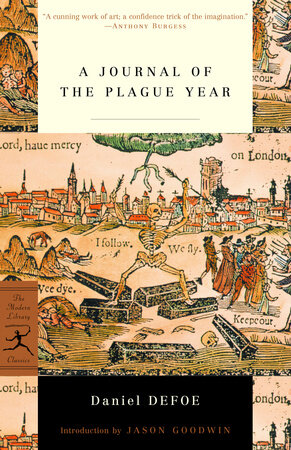
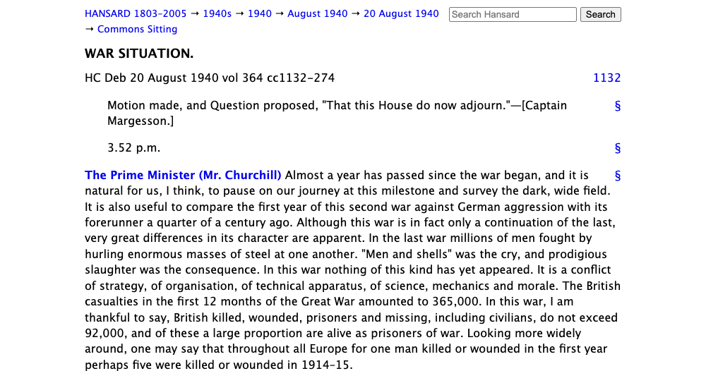

1:27:15 · 12 OPERE
Scienza, libertà e pace di Aldous Huxley.
Il filo del discorso
Dr Divago presenta Science, Liberty and Peace di Aldous Huxley come una lettura per interrogare il rapporto fra progresso tecnico, concentrazione del potere e libertà personale. Dichiara di lavorare sul testo inglese, traducendo alcuni passi durante il commento, e di non avere consultato la traduzione italiana. Il riferimento iniziale al 1947 riguarda l’edizione britannica Chatto & Windus: i cataloghi attestano anche un’edizione americana Harper & Brothers del 1946. Un’altra precisazione bibliografica riguarda il volume Medusa: il Saggio sulla grazia è un testo pubblicato insieme al saggio principale, non semplicemente un sottotitolo aggiunto all’originale. L’epigrafe di Tolstoj offre il punto di partenza: in una società organizzata in modo oppressivo, il dominio della natura può accrescere il potere di chi domina già gli altri uomini. Il relatore legge questo rapporto come un esempio del dialogo della cultura attraverso le generazioni e contesta l’idea che un pensiero valga soltanto perché recente. Il bersaglio non è la ricerca scientifica in sé, ma la trasformazione delle sue applicazioni in strumenti di comando. Gli esempi delle dittature e della bomba atomica introducono la domanda su chi stabilisca i fini della tecnica e su quali limiti proteggano gli individui. Una lunga digressione riguarda il significato della parola scienza. Dr Divago rifiuta di trattare come equivalenti discipline con oggetti e possibilità di previsione differenti; contrappone la conoscenza alla sua riduzione a metodo e richiama Cartesio. L’esempio della teiera serve a confrontare la prevedibilità di un problema fisico circoscritto con la complessità di una decisione clinica. Da qui passa alle differenze individuali, alle migrazioni umane e alle conquiste coloniali. Sono argomenti del relatore, non dimostrazioni di una gerarchia biologica fra popolazioni: provenienza geografica ed etnia non sostituiscono le caratteristiche cliniche e genetiche della singola persona. Anche l’esempio sull’alcol richiede una correzione: alcune varianti ereditarie del metabolismo sono più frequenti in determinate popolazioni, ma non dipendono semplicemente dall’essere appena arrivati dall’Asia o dall’essere cresciuti altrove. Le analogie storiche sono schematiche; per esempio la prima conquista russa del khanato siberiano appartiene alla spedizione di Ermak nel Cinquecento, non a Pietro il Grande, e classificare gli Inca come una società dotata di utensili di ferro è inesatto. Tornando a Huxley, il commento insiste sull’aumento simultaneo della capacità produttiva e della capacità di coercizione. Le polizie moderne dispongono di mezzi che Fouché non possedeva; l’inefficienza materiale dello Stato poteva un tempo lasciare spazi che una macchina amministrativa più efficace restringe. Dr Divago applica queste pagine al clima dell’emergenza Covid e alle limitazioni della circolazione. Il suo giudizio sulla sospensione della democrazia resta una valutazione politica. Il quadro costituzionale richiede una distinzione: l’articolo 16 prevede limitazioni generali stabilite dalla legge per sanità o sicurezza, e l’articolo 32 tutela insieme il diritto individuale e l’interesse collettivo alla salute. Questo non risolve da solo la legittimità di ogni provvedimento concreto, ma impedisce di identificare automaticamente qualsiasi limite sanitario con l’abolizione della Costituzione. Analogamente, singoli soccorsi prestati durante il fascismo non cancellano la partecipazione degli apparati italiani agli arresti antiebraici, documentata anche dall’ordinanza di polizia del 30 novembre 1943. Il problema democratico non si esaurisce nel voto. Il relatore domanda chi selezioni i candidati e quale potere effettivo rimanga al cittadino. Nelle pagine di Huxley trova poi l’asimmetria fra gli arsenali dello Stato e i mezzi disponibili alla popolazione: la nonviolenza gandhiana viene proposta come risposta possibile, insieme al problema dei suoi limiti di fronte a governi privi di scrupoli. Il discorso passa dalla coercizione alla persuasione. Stampa, radio, istruzione e finanziamento dei giornali possono moltiplicare l’influenza di minoranze organizzate. Dr Divago collega questi argomenti alla proprietà dei media, a Chomsky e alla ripetizione dei messaggi durante la pandemia; le accuse di una regia coordinata restano ipotesi del suo intervento, non fatti provati dalla lettura di Huxley. La letteratura delle epidemie — Manzoni, Boccaccio, Tucidide, Defoe e il romanzo di Eugène Sue — viene richiamata come memoria con cui confrontare il presente. Questa analogia non può però stabilire da sola gravità e diffusione di una malattia. Le affermazioni sanitarie del video richiedono esplicita contestualizzazione: confrontare una media giornaliera annua di decessi per tutte le cause con un conteggio giornaliero Covid non dimostra l’assenza di un’epidemia. I dati Istat sulla prima ondata documentano invece un forte eccesso di mortalità; l’ISS distingue inoltre i decessi causati dal Covid dalla semplice positività al test. Il valore estremamente basso di letalità riferito nel parlato non è verificato, e non sostiene una conclusione generale di minore pericolosità rispetto all’influenza. Neppure la cremazione costituisce, di per sé, prova di occultamento: le indicazioni OMS del 2020 contemplavano sia sepoltura sia cremazione. Il video non fornisce riscontri per l’accusa specifica di distruzione intenzionale delle prove. Nell’ultima parte, la critica della propaganda si unisce a quella della dipendenza economica e della rinuncia all’iniziativa civile. Il richiamo a Franklin mette in rapporto libertà e sicurezza; Huxley è nuovamente letto per sostenere che le garanzie scritte non si difendono da sole. Il relatore distingue l’ipotesi dal divieto di porre domande, ma interpreta la somiglianza dei messaggi governativi come indizio di intenzionalità: un passaggio argomentativo che non viene qui convertito in prova. La conclusione rovescia attraverso Huxley la celebre formula di Churchill sui pochi e i molti, per denunciare la possibilità che i mezzi di comunicazione rendano intere popolazioni dipendenti da pochissimi centri di decisione. L’appello finale riguarda dunque la responsabilità dei cittadini, la memoria storica e la difesa di spazi effettivi di giudizio personale.
I libri nel discorso

Scienza, libertà e pace (Science, Liberty and Peace)
Copertina: Chatto & Windus, Londra 1947: sovraccoperta fotografata dell’esemplare Jonkers 44678
Sovraccoperta autentica del testo inglese, titolo e autore leggibili, parte del dorso presente. Non è il volume Medusa con un altro saggio e non è un’edizione posseduta identificata audiovisivamente.
Riferimento ricavato dalla trascrizione automatica.
Passaggio 0:03 ↗ · Fonti e libro ↗
Modern Science
Identificazione probabile
Incipit del saggio nella ristampa 2014: Porzione dell’incipit di Modern Science, ristampato in Visions for Sustainability 1(2014),p.41: titolo, epigrafe greca e primo paragrafo storico completo.
Riproduzione della colonna destra di p. 41; il commento moderno di Enzo Ferrara resta distinto dal testo di Tolstoj. La fonte dichiara la traduzione inglese dei Maude ripresa da Recollections & Essays(Oxford University Press1961). È una ristampa 2014, non un originale 1898 o l’edizione Essays and Letters1904 usata dal testimone MIT. La massima citata nel video compare più avanti, a p.45, collazionata separatamente e non visibile nell’immagine.
A 208.56–251.08 s il relatore legge come epigrafe di Huxley un pensiero attribuito a Tolstoj: organizzazione sociale cattiva, minoranza che opprime la maggioranza, nuove vittorie sulla natura che ne accrescono il potere. La corrispondenza testuale è riscontrata nel saggio Modern Science, riprodotto da MIT e UniTO, senza introdurre una data o un titolo nel parlato.
Passaggio 3:28 ↗ · Fonti e libro ↗
Discorso sul metodo
Copertina: Laterza · Economica 127 · opera in collana dal 1998, ristampa 2025 · traduzione di Maria Garin
Immagine autentica dell’opera, controllata visivamente; l’edizione di riferimento non è attribuita al filmato.
Riferimento ricavato dalla trascrizione automatica.
Passaggio 16:13 ↗ · Fonti e libro ↗
Costituzione della Repubblica Italiana
Copertina dell’edizione Intra aggiornata al 2023: Intra · 2023 · introduzione di Umberto Vincenti
Copertina autentica del testo integrale, aggiornata alla legge costituzionale 26 settembre 2023 n.1. È successiva al filmato del 2019 e non rappresenta la versione storica letta dal relatore. Umberto Vincenti firma l’introduzione.
Riferimento ricavato dalla trascrizione automatica.
Passaggio 46:30 ↗ · Fonti e libro ↗
Media Control. The Spectacular Achievements of Propaganda
Identificazione probabile
Copertina della seconda edizione, immagine editoriale del volume: Seconda edizione ampliata, Seven Stories Press, 3 settembre 2002, 112 pagine, ISBN 9781583225363. Immagine tridimensionale autentica dell’editore con la copertina della seconda edizione. Non è La fabbrica del consenso, scritto con Edward S. Herman.
Titolo, autore, seconda edizione e fotografia dei contenitori della stampa verificati nella immagine intera. Immagine editoriale del volume. La frase non consente da sola di stabilire se nel video la fonte sia il libro o una intervista.
Riferimento ricavato dalla trascrizione automatica.
Passaggio 1:00:07 ↗ · Fonti e libro ↗
I promessi sposi
Identificazione probabile
Copertina: BUR · 1998 · introduzione di Guido Bezzola
Immagine autentica dell’opera, controllata visivamente; l’edizione di riferimento non è attribuita al filmato.
Riferimento ricavato dalla trascrizione automatica.
Passaggio 1:01:12 ↗ · Fonti e libro ↗
Decameron
Identificazione probabile
Copertina: BUR / Rizzoli · 2013
Immagine autentica dell’opera, controllata visivamente; l’edizione di riferimento non è attribuita al filmato.
Riferimento ricavato dalla trascrizione automatica.
Passaggio 1:01:14 ↗ · Fonti e libro ↗
La guerra del Peloponneso
Identificazione probabile
Copertina: Einaudi-Gallimard · Biblioteca della Pléiade · 1997
Copertina autentica controllata visivamente. Edizione di riferimento, non identificata come quella usata nel video.
Riferimento ricavato dalla trascrizione automatica.
Passaggio 1:01:17 ↗ · Fonti e libro ↗
Diario dell’anno della peste (A Journal of the Plague Year)
Identificazione probabile
Copertina: Modern Library,13 novembre 2001, ISBN 9780375757891, introduzione Jason Goodwin
Copertina ufficiale PRH dell’opera di Defoe, titolo e autore leggibili. Illustra un’edizione moderna del romanzo 1722 e non un’autobiografia scritta da un adulto testimone nel 1665. Edizione non confermata nel video.
Riferimento ricavato dalla trascrizione automatica.
Passaggio 1:01:22 ↗ · Fonti e libro ↗L’ebreo errante (Le Juif errant)
Copertina: Robert Laffont, Bouquins 1983, edizione Francis Lacassin, ISBN 2221011414
Miniatura bibliotecaria autentica 103 × 154, bassa risoluzione dichiarata; titolo Le Juif errant, autore Eugène Sue e marchio Bouquins presenti. È il romanzo, non il dramma 1849, l’opera di Halévy o un testo di un altro autore.
Riferimento ricavato dalla trascrizione automatica.
Passaggio 1:01:29 ↗ · Fonti e libro ↗
Dialoghi dei morti
Copertina: Aurora Boreale · 2024 · introduzione di Nicola Bizzi
Immagine autentica dell’opera, controllata visivamente; l’edizione di riferimento non è attribuita al filmato.
Riferimento ricavato dalla trascrizione automatica.
Passaggio 1:02:38 ↗ · Fonti e libro ↗
War Situation (intervento alla Camera dei Comuni, 20 agosto 1940)
Identificazione probabile
Estratto documentario · Historic Hansard, 20 agosto 1940: Estratto documentario della riproduzione web ufficiale Historic Hansard, HC Deb 20 August 1940, vol. 364: titolo, data, riferimento, incipit procedurale e primo paragrafo storico completo dell’intervento del Primo ministro Winston Churchill. Non è una copertina, un manoscritto o una scansione dell’edizione1940.
Immagine documentaria della pagina ufficiale, dal titolo al primo paragrafo storico completo. La massima citata si trova più avanti (col. 1167) e non appare nell’immagine.
A5138.95s il relatore nomina Winston Churchill; a5148.6–5165.63s parafrasa una massima riferita alla battaglia d’Inghilterra. Il passaggio è introdotto come ripresa del testo di Huxley e prosegue con una diversa formulazione sul controllo di molti da parte di pochi.
Passaggio 1:25:38 ↗ · Fonti e libro ↗